1. Contexte et objectifs du projet
Le challenge vise à entraîner un modèle capable de répondre à des questions de santé — santé sexuelle et reproductive notamment — directement dans la langue locale de l'utilisateur, plutôt qu'en anglais uniquement. C'est ce choix de terrain qui a guidé nos décisions tout au long du projet : une bonne partie des populations concernées ne lit ni n'écrit l'anglais couramment, et une réponse médicale mal comprise perd toute son utilité, aussi juste soit-elle sur le plan clinique.
| Langue | Pays / subset |
|---|---|
| English | Uganda (Eng_Uga), Ghana (Eng_Gha), Éthiopie (Eng_Eth), Kenya (Eng_Ken) |
| Akan | Ghana (Aka_Gha) |
| Luganda | Uganda (Lug_Uga) |
| Swahili | Kenya (Swa_Ken) |
| Amharique | Éthiopie (Amh_Eth) |
Pour répondre à ce défi, nous avons choisi d'explorer deux approches complémentaires plutôt que de nous limiter à une seule, afin de pouvoir comparer leurs compromis respectifs :
- mT5-small (Google) — un modèle Sequence-to-Sequence multilingue, que nous avons entraîné en full fine-tuning (tous les paramètres mis à jour) ;
- Gemma E2B (Google) — un modèle génératif plus récent et beaucoup plus volumineux, que nous avons adapté par QLoRA (quantification 4-bit + adaptateurs LoRA), une technique d'adaptation efficace en paramètres.
Ce choix n'était pas arbitraire : mT5-small est le modèle explicitement recommandé par le notebook de démarrage Zindi pour un premier run rapide (section suivante), tandis que Gemma E2B nous permettait de tester une approche plus ambitieuse, à la mesure de ce qu'un modèle génératif récent peut apporter sur cette tâche — au prix d'un budget de calcul largement supérieur, que nous détaillons plus loin.
2. Point de départ du challenge — baselines fournies par Zindi
Avant de développer nos propres pipelines, nous avons pris connaissance du notebook de démarrage (« starter notebook ») fourni par Zindi. Ce notebook n'est pas notre travail : c'est le code de référence proposé par l'organisateur, que nous avons exécuté tel quel pour disposer d'un point de comparaison indépendant avant d'entraîner nos deux modèles.
2.1 Baseline 1 — Retrieval TF-IDF
La première approche ne fait appel à aucun réseau de neurones : pour chaque question de test, elle recherche la question d'entraînement la plus proche par similarité cosinus sur des n-grammes de caractères — un choix qui fonctionne indépendamment du système d'écriture (latin ou guèze pour l'amharique), sans avoir besoin d'un tokeniseur propre à chaque langue.
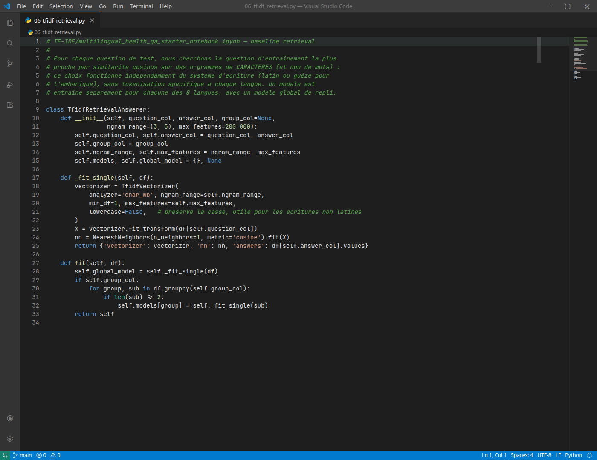
TfidfRetrievalAnswerer, baseline de retrieval par n-grammes de caractères.| Langue | ROUGE-1 | ROUGE-L |
|---|---|---|
| Swa_Ken | 0,6031 | 0,5672 |
| Eng_Ken | 0,5989 | 0,5606 |
| Eng_Eth | 0,5170 | 0,4994 |
| Eng_Uga | 0,5163 | 0,4709 |
| Lug_Uga | 0,5155 | 0,4935 |
| Aka_Gha | 0,2832 | 0,1674 |
| Eng_Gha | 0,2582 | 0,1707 |
| Amh_Eth | 0,1455 | 0,1353 |
Sur l'ensemble du jeu de validation : ROUGE-1 = 0,4207 / ROUGE-L = 0,3655.
2.2 Baseline 2 — LLM multilingue en zero-shot
Le notebook propose trois modèles possibles en commentaire (google/mt5-small, google/mt5-base, facebook/nllb-200-distilled-600M) — seul ce dernier est effectivement chargé dans le run que nous avons exécuté. Le prompt utilisé ne contient aucune instruction de tâche ni nom de langue : la question brute est envoyée telle quelle au modèle.
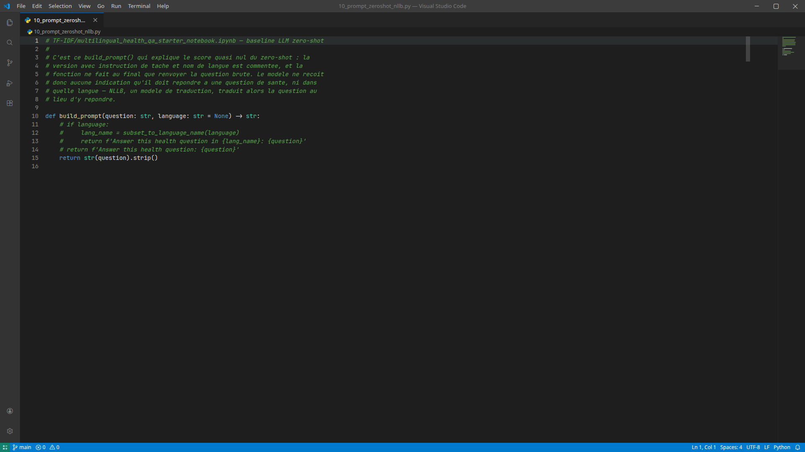
build_prompt(), la version avec instruction de tâche est commentée dans le notebook de départ.Sur un échantillon de 200 exemples de Val.csv (le notebook de démarrage n'évalue pas cette baseline sur l'ensemble complet, contrairement au retrieval TF-IDF ci-dessus) : ROUGE-1 = 0,0074 / ROUGE-L = 0,0071, avec plusieurs langues exactement à 0. En inspectant les réponses générées, nous avons compris pourquoi : NLLB est un modèle de traduction, pas de question-réponse, et sans instruction de tâche, il traduit la question au lieu d'y répondre — un exemple généré finit en russe, un autre en français, sans lien avec une réponse médicale.
2.3 Comparaison des deux baselines
| Baseline | ROUGE-1 F1 | ROUGE-L F1 |
|---|---|---|
| TF-IDF Retrieval | 0,4135 | 0,3581 |
| LLM zero-shot (NLLB-200) | 0,0074 | 0,0071 |
2.4 Fine-tuning bonus du LLM (NLLB)
Le notebook propose enfin de fine-tuner ce même NLLB sur nos données d'entraînement (3 epochs, batch 8, Seq2SeqTrainer).
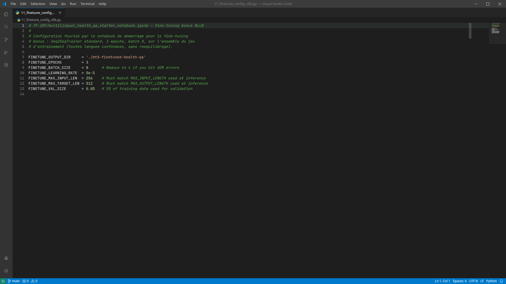
| Langue | ROUGE-1 | ROUGE-L |
|---|---|---|
| Eng_Uga | 0,4122 | 0,3527 |
| Eng_Eth | 0,3930 | 0,3683 |
| Aka_Gha | 0,3481 | 0,2243 |
| Eng_Gha | 0,3302 | 0,2457 |
| Swa_Ken | 0,2917 | 0,2013 |
| Eng_Ken | 0,2534 | 0,1777 |
| Lug_Uga | 0,1668 | 0,1243 |
| Amh_Eth | 0,1356 | 0,1248 |
Sur l'ensemble du jeu de validation (6 686 exemples) : ROUGE-1 = 0,3176 / ROUGE-L = 0,2484.
Le notebook Zindi suggère explicitement mT5-small comme premier choix, « pour un premier run rapide », avant de recommander de passer à des modèles plus lourds. C'est directement ce qui a motivé notre choix de l'approfondir en un pipeline complet de full fine-tuning (section 4), en complément d'une seconde approche plus ambitieuse sur Gemma E2B (section 5).
3. Exploration des données
Nos deux pipelines partent du même jeu de données brut. Nous avons mené cette exploration deux fois, indépendamment, dans chacun des deux pipelines — et nous sommes arrivés aux mêmes constats de base, ce qui nous a rassurés sur leur fiabilité.
3.1 Chargement et contrôle qualité
| Jeu | Lignes | Colonnes |
|---|---|---|
| Train | 29 815 | 4 (ID, input, output, subset) |
| Val | 6 686 | 4 |
| Test | 2 618 | 3 (output absent, à prédire) |
3.2 Distribution des langues
Le dataset présente un déséquilibre net entre les 8 sous-ensembles langue/pays : la langue la plus représentée (Eng_Uga) pèse plus de 4 fois la moins représentée (Amh_Eth).
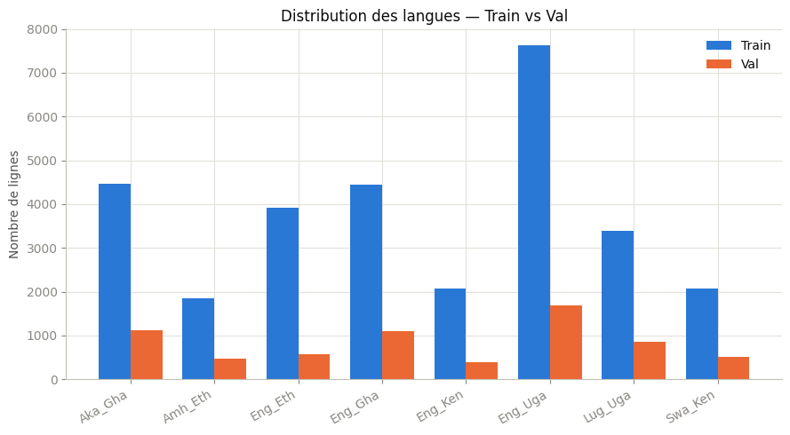
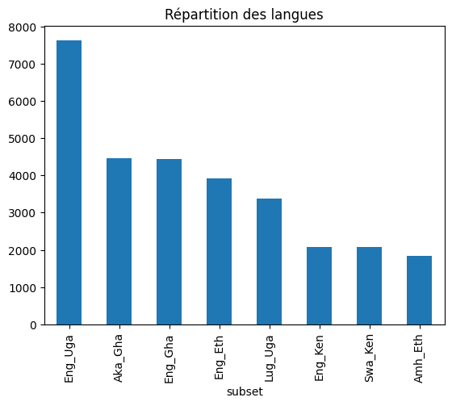
C'est ce déséquilibre qui nous a poussés, dans le pipeline Gemma, à sur-échantillonner les langues minoritaires avant l'entraînement (section 5.2).
3.3 Longueur des séquences et efficacité de la tokenisation
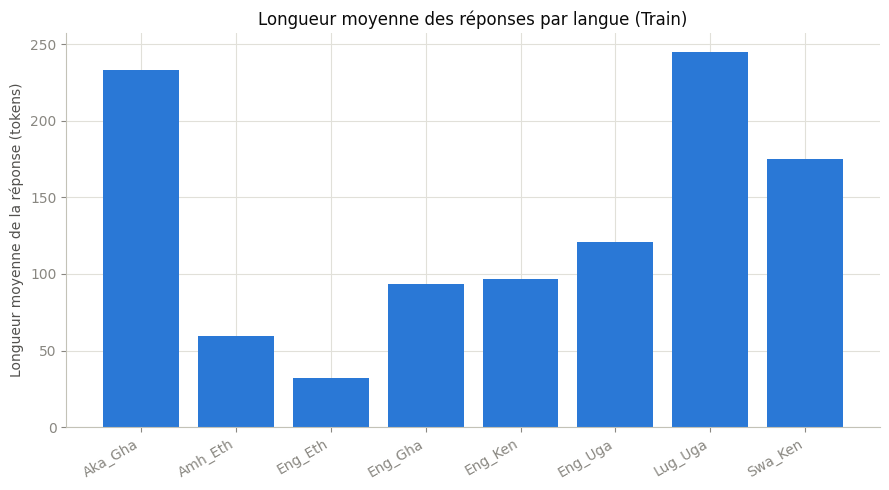
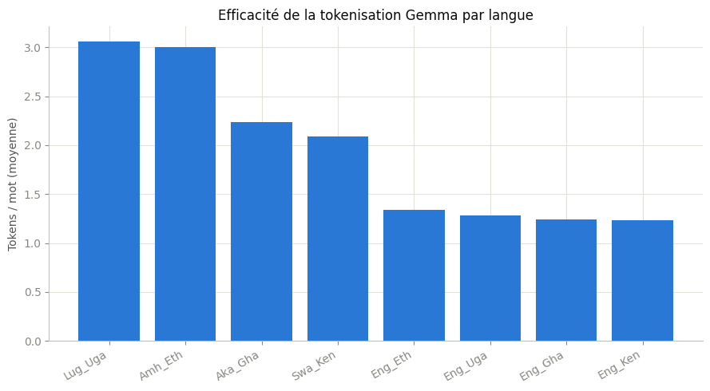
4. Modèle 1 — mT5-small (full fine-tuning)
Le premier modèle que nous avons entraîné est mT5-small (300 millions de paramètres), en full fine-tuning — un choix cohérent avec sa taille raisonnable, qui rend cette approche abordable sur un seul GPU Colab, contrairement à Gemma E2B (section 5).
4.1 Pré-traitement
Nous avons structuré la préparation du jeu de données mT5 en un pipeline en six étapes, du CSV brut jusqu'aux identifiants numériques exploitables par le modèle :
- Charger les donnéesCSV → Pandas
- Explorer et contrôler la qualitévaleurs manquantes, doublons, dimensions
- Nettoyerespaces superflus + normalisation Unicode NFC
- ConvertirDataFrame → Hugging Face
Dataset - Charger le tokenizer mT5
google/mt5-small, SentencePiece, 101 langues - Tokeniserquestions →
input_ids, réponses →labels
Nous avons normalisé les caractères en Unicode NFC avant tokenisation, pour éviter que deux textes visuellement identiques soient tokenisés différemment selon leur encodage d'origine — un risque réel vu le mélange de systèmes d'écriture de notre dataset (latin, Ge'ez).
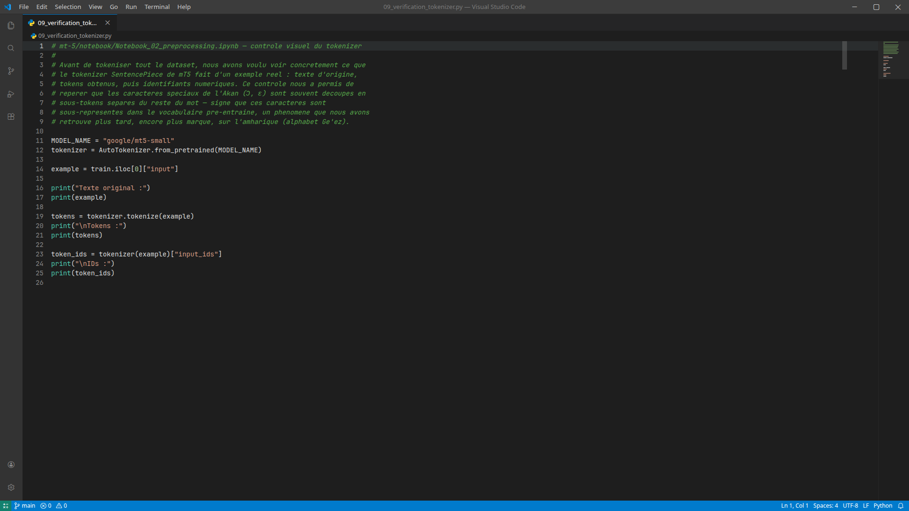
Avant de tokeniser l'ensemble du dataset, nous avons voulu voir concrètement ce que le tokenizer SentencePiece de mT5 fait d'un exemple réel : texte d'origine, tokens obtenus, puis identifiants numériques. Ce contrôle nous a permis de repérer que les caractères spéciaux de l'akan (Ɔ, ɛ) sont souvent découpés en sous-tokens séparés du reste du mot — signe que ces caractères sont sous-représentés dans le vocabulaire pré-entraîné, un phénomène que nous avons retrouvé plus tard, encore plus marqué, sur l'amharique (alphabet Ge'ez) et que nous relions directement au constat de la section 3.3.
Nous avons fixé une longueur maximale de 128 tokens pour les questions et 256 tokens pour les réponses, avec troncature au-delà — un choix directement dérivé des longueurs mesurées en section 3.3 : les réponses sont systématiquement plus longues que les questions (voir la figure « Longueur moyenne des réponses par langue »), il fallait donc leur laisser nettement plus de marge qu'aux questions. Le plafond de 256 couvre la grande majorité des réponses observées sans pour autant gonfler inutilement les séquences les plus courtes.
4.2 Entraînement
| Paramètre | Valeur |
|---|---|
| Epochs | 2 |
| Batch size (train/eval) | 4 par device |
| Gradient accumulation | 2 (batch effectif = 8) |
| Learning rate | 3 × 10⁻⁴ (avec warmup) |
| Weight decay | 0,01 |
| Optimiseur | Adafactor |
| Précision | FP16/BF16 désactivés |
Nous avons choisi l'optimiseur Adafactor plutôt qu'AdamW parce que c'est l'optimiseur historiquement utilisé pour pré-entraîner toute la famille T5/mT5 — rester cohérent avec l'optimiseur d'origine nous a semblé plus sûr qu'un choix générique. C'est aussi ce qui a guidé notre choix de learning_rate=3×10⁻⁴ : c'est la valeur reprise par les scripts officiels Hugging Face de fine-tuning T5/mT5 (run_translation.py, run_summarization.py) spécifiquement pour un entraînement avec Adafactor — une valeur déjà éprouvée sur ce couple modèle/optimiseur, que nous avons préférée à un balayage de taux d'apprentissage que notre budget de calcul (un seul GPU Colab) ne permettait pas de mener sérieusement. Nous avons désactivé le calcul en précision réduite (FP16/BF16) après avoir constaté que mT5 y est numériquement instable ; le T4 fourni par Colab ne gère de toute façon pas le bf16 efficacement. Le batch effectif de 8 (4 par device × 2 d'accumulation) est un compromis pour limiter la consommation mémoire du T4 tout en gardant un batch statistiquement raisonnable.
| Step | Training Loss | Validation Loss |
|---|---|---|
| 1 000 | 6,9456 | 2,8372 |
| 2 000 | 6,0090 | 2,4809 |
| 3 000 | 5,5638 | 2,3054 |
| 4 000 | 5,0619 | 2,1952 |
| 5 000 | 4,9497 | 2,1155 |
| 6 000 | 4,8403 | 2,0671 |
| 7 000 | 4,8294 | 2,0425 |
| 7 454 | 4,7372 | 2,0376 |

4.3 Test qualitatif immédiat
| Question | Réponse générée |
|---|---|
| Can I breastfeed if I have a fever? | This is a question about, General. No. Breastfeeding is a healthy and healthy diet. |
Ce test nous a confirmé que le pipeline fonctionne techniquement de bout en bout, mais nous a aussi montré que la qualité restait limitée sur cet exemple isolé — la formulation est incohérente et la réponse « No » n'est pas justifiée. Nous avons donc jugé nécessaire de poursuivre avec une évaluation systématique sur l'ensemble du jeu de validation.
4.4 Évaluation sur le jeu de validation
Nous avons généré une réponse pour chacune des 6 686 questions de validation, par lots de 8, avec une recherche en faisceau (num_beams=4) plutôt qu'un décodage glouton, pour privilégier la qualité des réponses générées.
| Métrique | Score F1 moyen |
|---|---|
| ROUGE-1 | 0,2104 |
| ROUGE-L | 0,1745 |
| Langue | ROUGE-1 | ROUGE-L |
|---|---|---|
| Amh_Eth | 0,0259 | 0,0259 |
| Lug_Uga | 0,0929 | 0,0884 |
| Eng_Ken | 0,1560 | 0,1182 |
| Swa_Ken | 0,1843 | 0,1596 |
| Eng_Uga | 0,1926 | 0,1501 |
| Eng_Gha | 0,2759 | 0,2329 |
| Eng_Eth | 0,3078 | 0,2889 |
| Aka_Gha | 0,3199 | 0,2492 |

Ce que nous en retenons pour une itération future : le modèle fonctionne de façon satisfaisante sur les langues à script latin (akan, anglais, dans une moindre mesure swahili), avec un ROUGE-1 dans la fourchette 0,15–0,32. L'amharique reste le point faible critique et tire la moyenne globale vers le bas — une amélioration ciblée sur cette langue (sur-échantillonnage, epochs supplémentaires, ou vérification du support du script Ge'ez par le tokeniseur) aurait selon nous le plus fort impact sur le score final.
5. Modèle 2 — Gemma E2B (QLoRA)
Le second modèle que nous avons testé est Gemma E2B (google/gemma-4-E2B-it), environ 5,13 milliards de paramètres — bien plus volumineux que mT5. Compte tenu de cette taille, un fine-tuning complet était hors de portée des GPU dont nous disposions (T4 puis L4 sur Colab), aussi bien en mémoire qu'en temps de calcul : nous avons donc choisi QLoRA, détaillée section par section ci-dessous.
5.1 Chargement en 4 bits
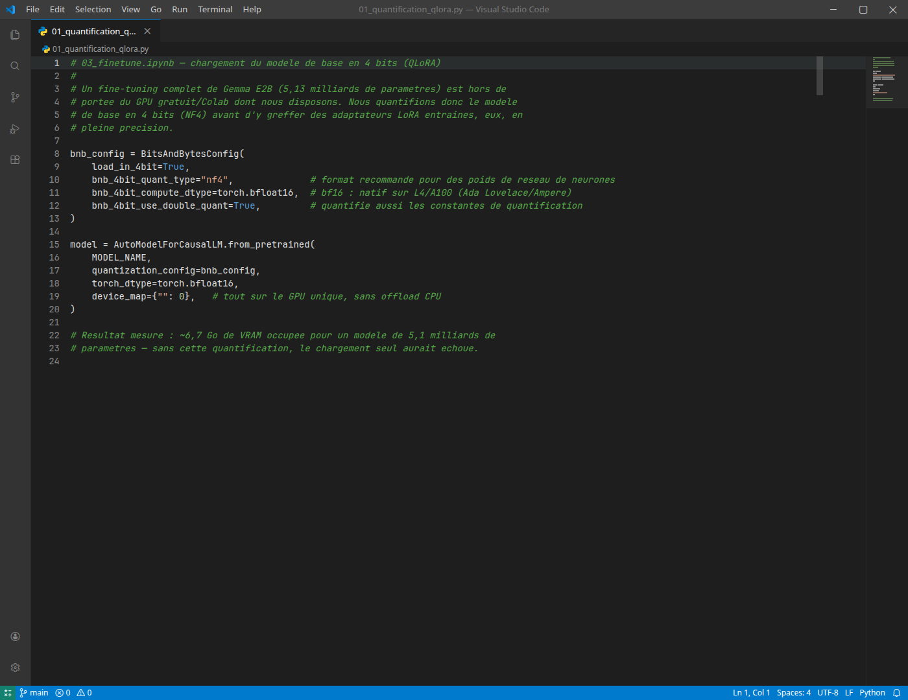
Nous avons chargé le modèle sur un GPU L4 (24 Go de VRAM), après avoir commencé le setup initial sur un T4. Ce changement était motivé par deux choses : le L4 supporte nativement le bf16 (architecture Ada Lovelace), contrairement au T4 (Turing), et il offre davantage de marge mémoire. Résultat mesuré : ~6,7 Go de VRAM occupée pour charger un modèle de plus de 5 milliards de paramètres — sans la quantification 4-bit, ce chargement aurait simplement échoué sur le matériel dont nous disposions.
5.2 Construction du dataset d'instruction-tuning
Nous avons mis chaque exemple au format « chat » attendu par Gemma. Le prompt d'instruction est rédigé en français, mais demande explicitement une réponse dans la langue locale de la question — le modèle est donc entraîné à comprendre une instruction en français et à répondre dans la langue africaine ciblée, jamais en français.
Nous avons ensuite réservé 5 % du jeu d'entraînement (stratifié par langue) comme jeu de développement interne, pour surveiller le sur-apprentissage pendant l'entraînement sans jamais toucher à Val.csv, que nous voulions garder intact comme validation finale fidèle à l'évaluation Zindi.
Rééquilibrage des langues minoritaires
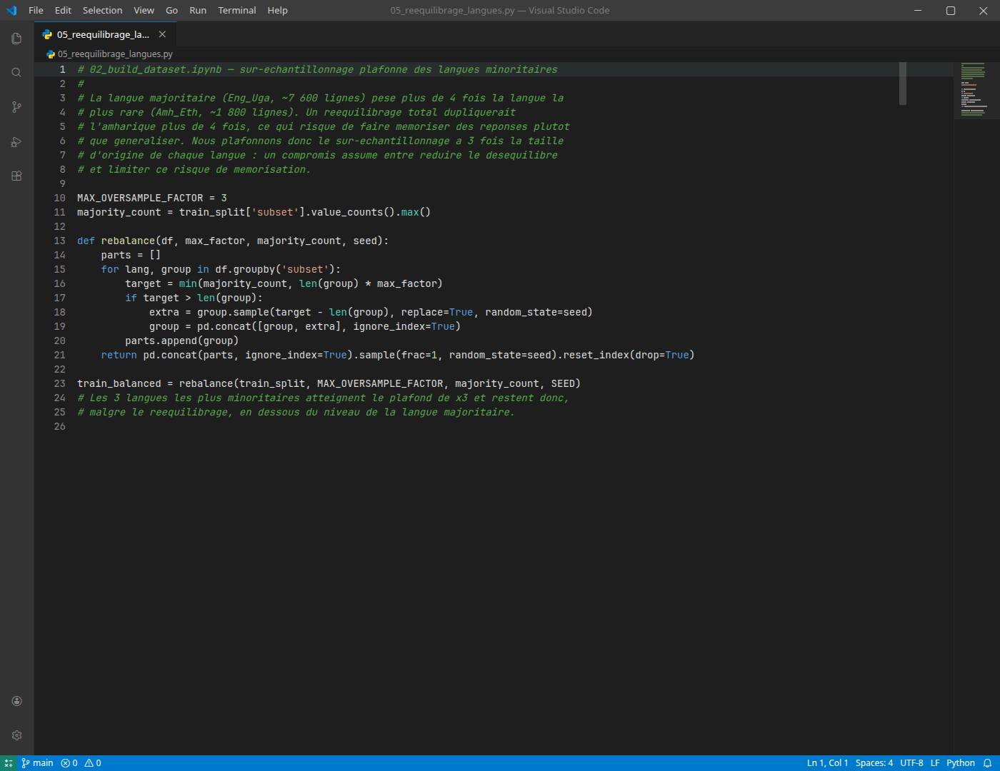
| Langue | Avant | Après | Facteur |
|---|---|---|---|
| Eng_Uga | 7 243 | 7 243 | ×1 (référence) |
| Aka_Gha | 4 232 | 7 243 | ×1,71 |
| Eng_Gha | 4 221 | 7 243 | ×1,72 |
| Eng_Eth | 3 719 | 7 243 | ×1,95 |
| Lug_Uga | 3 214 | 7 243 | ×2,25 |
| Eng_Ken | 1 976 | 5 928 | ×3 (plafond) |
| Swa_Ken | 1 966 | 5 898 | ×3 (plafond) |
| Amh_Eth | 1 753 | 5 259 | ×3 (plafond) |
Nous avons délibérément plafonné le sur-échantillonnage à 3 fois la taille d'origine de chaque langue, plutôt que de viser un rééquilibrage parfait. La raison : ramener l'amharique (1 753 lignes) au niveau de la langue majoritaire (7 243) l'aurait dupliqué plus de 4 fois, avec un risque réel que le modèle mémorise ces réponses au lieu d'apprendre à généraliser — un risque que nous avons jugé plus grave que le déséquilibre résiduel accepté par ce plafond.
5.3 Fine-tuning LoRA/QLoRA
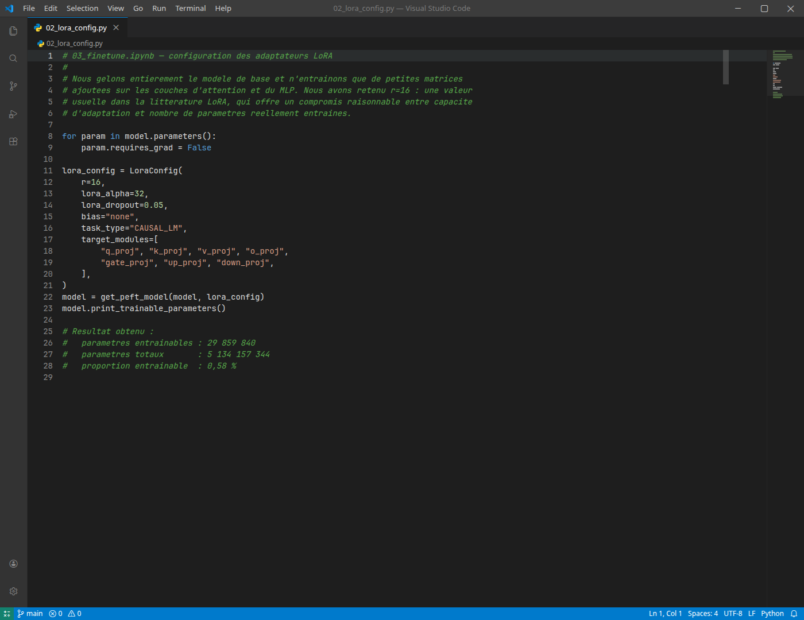
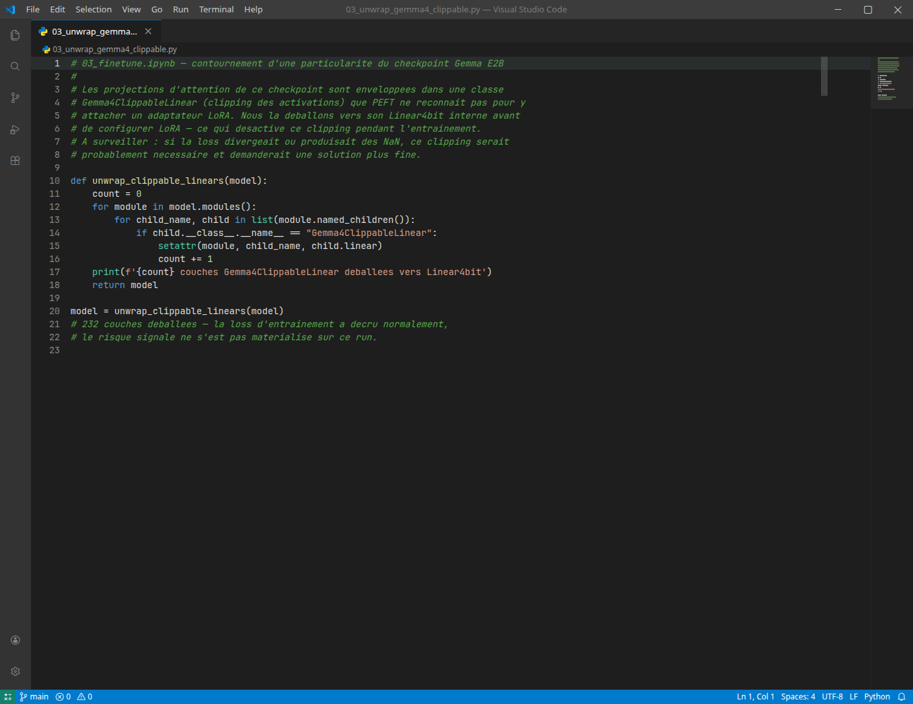
Nous avons gelé entièrement le modèle de base et n'avons entraîné que les adaptateurs LoRA, avec un rang r=16. Ce rang nous semblait le bon compromis pour notre cas : assez élevé pour donner à l'adaptateur une vraie capacité d'apprentissage sur une tâche générative multilingue (contrairement à des tâches de classification plus étroites, souvent traitées avec r=4 ou r=8 dans la littérature), mais sans multiplier inutilement les 29,9 millions de paramètres entraînables sur un budget de calcul limité à un seul GPU Colab, où chaque run supplémentaire pour tester un rang différent representait plusieurs heures. Nous avons fixé lora_alpha=32, soit exactement le double du rang (alpha/r=2) : ce ratio fixe le facteur d'échelle de la mise à jour LoRA (ΔW=(alpha/r)·BA) à une valeur par défaut largement validée dans les exemples officiels PEFT, ce qui nous a évité d'avoir à faire un balayage séparé de ce paramètre en plus du rang.
| Paramètres | Valeur |
|---|---|
| Paramètres entraînables | 29 859 840 |
| Paramètres totaux | 5 134 157 344 |
| Proportion entraînable | 0,58 % |
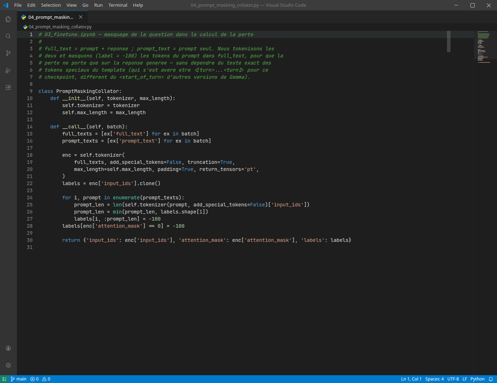
Nous avons construit un collator qui masque les tokens de la question dans le calcul de la perte, pour que le modèle ne soit noté et corrigé que sur sa capacité à produire la réponse — jamais sur sa capacité à reproduire la question. Nous avons choisi de mesurer la longueur du prompt plutôt que de chercher les tokens spéciaux du template, car ce checkpoint utilise <|turn>...<turn|>, différent du <start_of_turn> d'autres versions de Gemma — une mesure par longueur nous semblait plus robuste face à cette variation.

load_best_model_at_end=True, le checkpoint réellement conservé correspond au step ~6 400, pas à la fin de l'entraînement — les ~5-6 dernières heures de calcul ont donc surtout produit du sur-apprentissage sans bénéfice, un point que nous retenons pour un futur run (arrêt anticipé via early_stopping).
5.4 Évaluation (zero-shot vs fine-tuné)
Comme pour mT5 (section 4.4), nous avons généré une réponse pour chacune des 6 686 questions de Val.csv, avec et sans l'adaptateur LoRA, ce qui rend la comparaison entre les deux modèles pleinement rigoureuse — les deux portent désormais sur le même jeu complet.
| Métrique | Zero-shot | Fine-tuné | Gain |
|---|---|---|---|
| ROUGE-1 (F1) | 0,1280 | 0,4149 | +0,287 (×3,2) |
| ROUGE-L (F1) | 0,0791 | 0,3583 | +0,279 (×4,5) |
| Langue | ROUGE-1 zero-shot | ROUGE-1 fine-tuné | ROUGE-L zero-shot | ROUGE-L fine-tuné |
|---|---|---|---|---|
| Amh_Eth | 0,0566 | 0,1713 | 0,0452 | 0,1537 |
| Lug_Uga | 0,0050 | 0,2215 | 0,0046 | 0,1859 |
| Aka_Gha | 0,1006 | 0,2917 | 0,0765 | 0,2067 |
| Eng_Gha | 0,1811 | 0,3758 | 0,1094 | 0,2748 |
| Swa_Ken | 0,1949 | 0,3873 | 0,1180 | 0,3147 |
| Eng_Ken | 0,1722 | 0,4813 | 0,0990 | 0,4252 |
| Eng_Eth | 0,0748 | 0,5775 | 0,0564 | 0,5519 |
| Eng_Uga | 0,1798 | 0,6241 | 0,0985 | 0,5886 |

5.5 Génération de la soumission finale
Nous avons généré une réponse pour l'intégralité des 2 618 questions de Test.csv, par lots de 8, en décodage déterministe. Nous avons généré et validé le fichier de soumission : 2 618 lignes, sans ID manquant ni dupliqué, sans réponse vide. Conformément au format attendu par Zindi, la même réponse générée est dupliquée dans les trois colonnes cibles (TargetRLF1, TargetR1F1, TargetLLM), puisque notre modèle produit une seule réponse par question, évaluée ensuite selon trois métriques différentes côté plateforme.
5.6 Fusion de l'adaptateur en modèle autonome
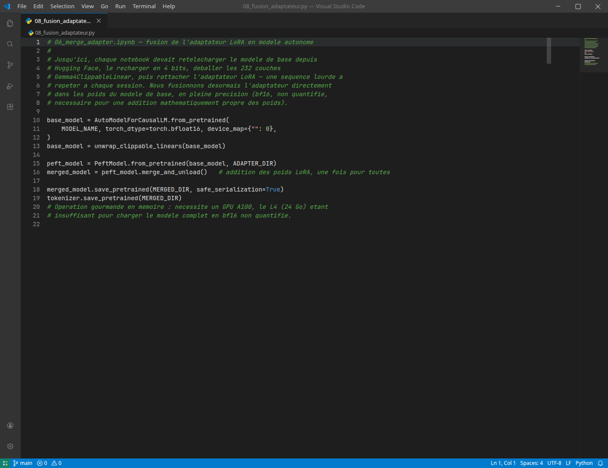
Nous avons ajouté une dernière étape, de nature infrastructurelle plutôt qu'analytique. Jusque-là, chaque notebook devait retélécharger le modèle de base depuis Hugging Face, le recharger en 4 bits, puis déballer manuellement les 232 couches Gemma4ClippableLinear avant de rattacher l'adaptateur — une séquence lourde à répéter à chaque session. Nous avons donc fusionné l'adaptateur LoRA directement dans les poids du modèle de base, en pleine précision (bf16, non quantifié, nécessaire pour une addition mathématiquement propre des poids). Cette opération, gourmande en mémoire (10,22 Go alloués pour la fusion à elle seule, en plus du modèle bf16 déjà chargé), nous a demandé un GPU A100 80 Go, le L4 (24 Go) étant insuffisant pour charger le modèle complet en bf16. Le modèle fusionné (10,24 Go, cohérent avec les ~5,13 milliards de paramètres en bf16) est sauvegardé sur Drive et n'a plus besoin ni de Hugging Face ni de l'adaptateur séparé pour être rechargé.
Nous avons vérifié la fusion en rechargeant ce modèle directement depuis Drive (quantifié à nouveau en 4 bits, sans PeftModel ni connexion Hugging Face) puis en générant une réponse test : le modèle répond correctement et dans la bonne langue sur un exemple de santé en swahili, confirmant que la fusion préserve bien le comportement du modèle fine-tuné. Nous avons toutefois relevé, lors de ce rechargement, des avertissements UNEXPECTED/MISSING sur les paramètres des tours audio et vision de Gemma — des composants multimodaux hérités du checkpoint de base, que notre fonction de déballage des couches Gemma4ClippableLinear convertit elle aussi au passage, car elle s'applique à tout le modèle plutôt qu'aux seules couches de langage. Sans conséquence pour nous, puisque notre tâche est purement textuelle et n'a jamais sollicité ces deux tours, mais un point à corriger (limiter le déballage aux couches du modèle de langage) si ce checkpoint devait un jour être réutilisé pour de l'audio ou de l'image.
5.7 Démo en direct
Pour la soutenance, nous avons construit une interface de test en direct (Gradio), permettant de taper une question de santé dans n'importe laquelle des 5 langues et d'obtenir la réponse du modèle fine-tuné en streaming (mot par mot), avec une case à cocher pour comparer en parallèle avec la version avant fine-tuning. Nous avons retiré le sélecteur de langue de réponse initialement prévu : en Phase 2, la langue passée au prompt d'instruction était toujours celle de la question elle-même, jamais une langue cible différente — le modèle n'a donc jamais appris à traduire vers une langue distincte de celle de la question, et un sélecteur qui laisserait croire le contraire aurait été trompeur. Le modèle répond simplement dans la langue de la question posée.

Nous avons testé la démo en conditions réelles avant de la considérer prête pour la soutenance.
model.disable_adapter() est une bascule globale sur cet objet, pas thread-safe. Nous avons donc chargé une deuxième instance complète du modèle de base (sans adaptateur), dédiée au zero-shot — 13,65 Go de VRAM mesurés pour les deux modèles ensemble (GPU L4), contre ~6,7 Go pour un seul. Chaque panneau se remplit dès que sa génération progresse, sans attendre l'autre : sur la capture ci-dessus, les deux réponses affichent exactement le même temps de génération (95,9 s), preuve qu'elles tournent bien simultanément. Ce n'est toutefois pas gratuit : les deux générations se partagent le même GPU, donc chacune est individuellement plus lente que si elle tournait seule — le gain n'est pas sur le temps de calcul total, mais sur l'expérience perçue : les deux réponses progressent sous les yeux de l'utilisateur au lieu qu'un panneau reste vide pendant que l'autre tourne seul.
Ce test a aussi reproduit, sur un nouvel exemple, le mode de dégénérescence déjà observé en section 5.4 sur le luganda : en akan zero-shot, le modèle boucle sur un mot répété (« sɛn ɛyɛ sɛn ɛyɛ... ») au lieu de produire une réponse, alors que la version fine-tunée répond correctement et de façon cohérente à la même question — une confirmation supplémentaire, sur un exemple concret et en conditions réelles, du gain qualitatif mesuré en section 5.4.
Nous avons volontairement limité cette démo à Gemma dans un premier temps : comparer les quatre approches en direct demanderait de centraliser les checkpoints de mT5, TF-IDF et NLLB, développés séparément par les membres de l'équipe, sur un même environnement — un chantier que nous envisageons pour une itération future.
6. Comparaison des modèles
Les deux modèles sont désormais évalués sur le même jeu de validation complet (6 686 exemples), ce qui rend la comparaison chiffrée ci-dessous pleinement rigoureuse.

| Critère | mT5-small | Gemma E2B (QLoRA) |
|---|---|---|
| Paramètres totaux | 300 M | 5,13 Md |
| Paramètres entraînés | 300 M (100 %) | 29,9 M (0,58 %) |
| Méthode d'adaptation | Full fine-tuning | QLoRA (4-bit + LoRA) |
| Durée d'entraînement | ~2h33 | ~16h45 |
| Overfitting observé | Non (sur la plage mesurée) | Oui (à partir du step ~6 400) |
| Taille échantillon éval. | 6 686 (Val complet) | 6 686 (Val complet) |
| ROUGE-1 (moyen) | 0,2104 | 0,4149 |
| ROUGE-L (moyen) | 0,1745 | 0,3583 |
Nos deux modèles fine-tunés dépassent nettement les baselines de départ fournies par Zindi (TF-IDF 0,41/0,36 mis à part — voir la réserve méthodologique en section 2.1) : mT5 (0,21/0,17) et surtout Gemma fine-tuné (0,41/0,36) font mieux que le LLM fine-tuné du notebook de démarrage (0,32/0,25), ce qui nous conforte dans l'idée que notre travail d'exploration, de rééquilibrage des langues et de formatage des prompts (sections 3 à 5) a porté ses fruits par rapport à une adaptation plus sommaire du template de départ. Gemma dépasse mT5 sur les deux métriques, avec un écart substantiel (+0,20 ROUGE-1, +0,18 ROUGE-L) — un résultat cohérent avec sa taille (17 fois plus de paramètres), mais obtenu pour un coût d'entraînement environ 6,5 fois plus long et une adaptation de seulement 0,58 % des paramètres, ce qui nous semble être le compromis le plus intéressant des deux si les ressources de calcul le permettent.
7. Difficultés techniques rencontrées et résolues
Nous documentons ici trois difficultés concrètes que nous avons rencontrées en cours de route, et la façon dont nous les avons résolues — elles nous semblent représentatives du travail d'ingénierie qu'a demandé ce projet, au-delà du seul entraînement des modèles.
7.1 Une classe non reconnue par PEFT
Les couches d'attention de ce checkpoint Gemma sont enveloppées dans une classe Gemma4ClippableLinear (clipping des activations) que la bibliothèque PEFT ne reconnaît pas pour y attacher un adaptateur LoRA. Nous avons résolu cela en déballant ces couches vers leur Linear4bit interne avant de configurer LoRA — ce qui désactive ce clipping pendant l'entraînement. Nous avons surveillé ce risque de près : si la loss avait divergé ou produit des NaN, cela aurait signalé que ce clipping était nécessaire ; ce n'est pas ce que nous avons observé, la loss ayant décru normalement sur tout l'entraînement.
7.2 Une évaluation de plusieurs heures perdue en une déconnexion
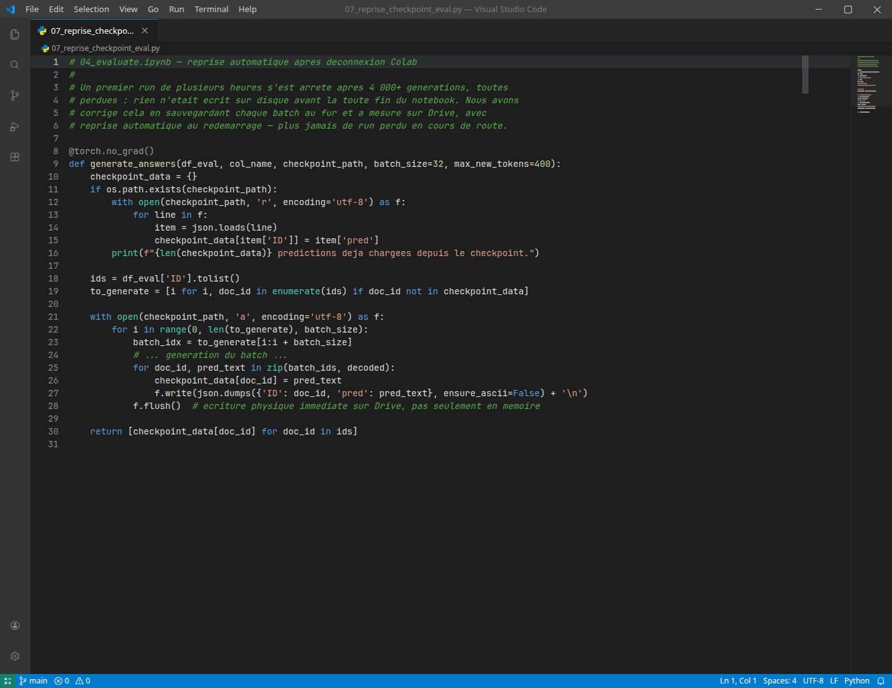
Notre premier run d'évaluation sur l'ensemble de Val.csv s'est arrêté après plus de 4 000 générations, à la suite d'une déconnexion de la session Colab — et nous avons perdu l'intégralité de cette progression. La cause : notre fonction de génération accumulait toutes les réponses en mémoire et n'écrivait rien sur disque avant la toute fin du notebook. Nous avons corrigé cela en sauvegardant chaque batch au fur et à mesure sur Drive, avec un mécanisme de reprise qui relit les prédictions déjà générées et ne recalcule que ce qui manque — un run interrompu ne nous coûte plus désormais qu'un batch, jamais des heures de calcul.
7.3 Une progression de GPU dictée par la mémoire disponible
Nous avons changé de GPU à trois reprises au cours du projet, chaque fois pour une raison précise : le T4 initial (16 Go) pour le setup et l'exploration ; le L4 (24 Go, bf16 natif) pour l'entraînement QLoRA, après avoir constaté qu'un batch de 8 provoquait un OOM sur le calcul de la perte (logits sur tout le vocabulaire) ; l'A100 (80 Go) pour la fusion de l'adaptateur en pleine précision (section 5.6), où même le L4 s'est révélé insuffisant pour charger le modèle complet en bf16 non quantifié.
8. Conclusion et recommandations
Ce projet nous a permis de mettre en œuvre et de comparer deux approches de fine-tuning de modèles de langage pour la tâche de questions-réponses médicales multilingues du challenge Zindi : un full fine-tuning d'un modèle compact (mT5-small) et une adaptation QLoRA d'un modèle bien plus volumineux (Gemma E2B). Partis du notebook de démarrage fourni par l'organisateur, dont le LLM baseline fine-tuné plafonnait à 0,32/0,25 de ROUGE — en dessous même du simple retrieval TF-IDF — nous avons développé deux pipelines complets allant nettement plus loin. Les deux pipelines partagent une même base de données, explorée et diagnostiquée en commun, ce qui nous a permis d'identifier dès la phase exploratoire des signaux (déséquilibre des langues, hétérogénéité de la tokenisation) que nous avons retrouvés, de façon cohérente, dans les résultats d'évaluation des deux modèles — et même dans ceux des baselines Zindi. Nous avons par ailleurs étendu l'évaluation de Gemma à l'ensemble du jeu de validation (section 5.4), ce qui nous a permis d'aboutir à une comparaison chiffrée pleinement rigoureuse entre les deux modèles (section 6) : Gemma fine-tuné (0,41/0,36) devance mT5 (0,21/0,17) sur les deux métriques.
Recommandations pour une itération future
- Cibler l'amharique et le luganda en priorité : sur-échantillonnage renforcé, données supplémentaires, voire vérification/adaptation du tokeniseur pour mieux supporter le script Ge'ez (amharique) ;
- Introduire un arrêt anticipé (early stopping) pour Gemma, afin d'éviter les ~5-6 heures de calcul supplémentaires qui ont surtout produit du sur-apprentissage sans bénéfice sur ce run ;
- Compléter l'évaluation automatique (ROUGE) par une évaluation humaine ou par un LLM juge, le score ROUGE ne mesurant qu'un chevauchement lexical et non la fiabilité médicale réelle des réponses générées ;
- Pour la mise en production, nous privilégierions le modèle offrant le meilleur compromis qualité / coût de calcul selon le contexte — Gemma fusionné en modèle autonome pour une meilleure qualité, ou mT5 pour un déploiement plus léger et rapide à entraîner.